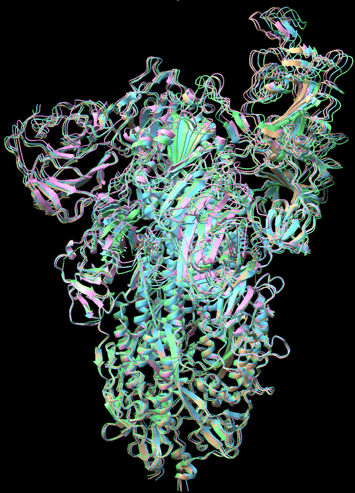

Background
In the previous post Heterogeneity analysis of cryo-EM data of proteins dynamic in comformation and composition using linear subspace methods, we reviewed the pipeline of RECOVAR (Gilles and Singer 2024) to generate movies showing the heterogeneity of proteins, and discussed its pros, cons and some improvements we could make. RECOVAR is a linear method which borrows the idea from principal component analysis to project complex structure information within cryo-EM data corresponding to each particle onto a lower dimensional space, where a trajectory is computed to illustrate the conformational and compositional changes (see previous post for details).
Compared with other methods, mostly based on deep learning, RECOVAR has several advantages, include but not limited to fast computation of embeddings, easy trajectory discovery in latent space and fewer hyperparameters to tune. Nevertheless, we’ve noticed several problems when we tested RECOVAR on our SARS-CoV2 datasets. One shortcoming is that the density-based trajectory discovery algorithm used by RECOVAR involves a deconvolution operation between two large matrices, which is extremely expensive. The other improvement we would like to make is to extend the series of density maps output by RECOVAR to the series of atomic models, which is usually the final product structure biologists desire in order to obtain atomic interpretations. In this post, we will focus on how we address these two problems, and present and interpret results from our SARS-CoV2 dataset.
Before getting to the Methods, I would like to provide background information about SARS-CoV2 spike protein. SARS-CoV2 spike protein is a trimer binding to the surface of SARS-CoV2 virus. It has a so-called recpetor-binding domain (RBD) capable of switching between “close” and “open” states. When in the open state, the spike is able to recognize and bind to angiotensin-converting enzyme 2 (ACE2), an omnipresent enzyme on the membrane of the cells of the organs in the respiratory system, heart, intestines, testis and kidney (Hikmet et al. 2020). The binding to ACE2 helps the virus dock on the target cells and initalize the invasion and infection of the cells. Therefore, spike is often the major target for antibody development. Previous researches mainly focus on developing drugs neutralizing the RBD regions in the open state. However as I mentioned before, spike can switch to the close state, in which the antibody targeting open RBD will not longer be able to access it, making the drugs less effective. Motivated by recent progress in the heterogeneity analysis of proteins, researchers now focus on the conformational changes instead of a homogeneous state. Developing drugs to block the shape change of spike is considered an potentially more efficient way to neutralize viruses. This is why it is important to have a reliable pipeline to generate movies showing the conformational changes in spike proteins.

The dataset we used comprises of 271,448 SARS-CoV2 spike protein particles, with some binding to ACE2. Therefore we would expect the algorithm to be able to deal with both conformational and compositional heterogeneity.
Methods
Review of the original RECOVAR pipeline
In this section I will briefly review RECOVAR. You can refer to the previous blog for more formal and detailed formulation of the problem.
RECOVAR starts with estimating the mean \(\hat{\mu}\) and covariance matrix \(\hat{\Sigma}\) of the conformations by solving the least square problems between the projection of the mean conformation and the particle images in the dataset. Next, principal components (PCs) can be computed from \(\hat{\mu}\) and \(\hat{\Sigma}\), and we obtained embeddings projected from conformations on the latent space formed by those (PCs). In order to generate a movie, the authors compute conformational densities by deconvolving densities in the latent space with embedding uncertainty, and finds a path between two specified states maximizing the accumulated densities along the path. Then each embeddings are converted into density maps via kernel regression.
Extensions to RECOVAR: MPPC for path discovery
The density-based path discovery algorithm used by RECOVAR is based on physical considerations that molecules prefer to take the path with lowest free energy, which is the path with highest conformational density, and is robust against outliers. Nevertheless, the time to deconvolve density is exponential of the number of PCs, and deconvolution requires large memory. Our 24GB GPU can deconvolve density at most a dimension of 4, but 4 PCs are usually not enough to capture enough heterogeneity as shown in the figure below, which indicates how the eigenvalues change with the number of PCs when applying RECOVAR to the SARS-CoV2 spike dataset. There are still quite large drops in the eigenvalue after 4 PCs.
Therefore, we proposed an alternative method to discover path by computing multiple penalized principal curves (MPPC) (Kirov and Slepčev 2017). The basic idea of MPPC is to find one or multiple curves to fit all the given points as close as possible, with constraints in the number and lengths of the curves. In order to be solved numerically, the curves are usually discretized. Let \(y^1 = (y_1, y_2, ..., y_{m_1}), y^2 = (y_{m_1+1}, y_{m_1+2}, ..., y_{m_1+m_2}),...,y^k = (y_{m-m_k+1}, y_{m-m_k+2},...,y_{m})\) to be \(k\) curves represented by \(m=m_1+m_2+...+m_k\) points. Let \(s_c = \sum_{j=1}^{c}m_j\) be the indices of the end points of curve \(c\). Each point \(x_i\) in the data to fit is assigned to the closest point on the curves, and we denote \(I_j\) to be the group of indices of data points that are assigned to curve point \(y_j\). The goal is to minimize: \[\sum_{j=1}^m\sum_{i\in I_j}w_i|x_i-y_j|^2+\lambda_1\sum_{c=0}^{k-1}\sum_{j=1}^{m_c+1}|y_{s_c+j+1}-y_{s_c+j}|+\lambda_1 \lambda_2 (k-1)\]
where \(w_i\) is the weight assigned to \(i\)th data point, and \(\lambda_1\) and \(\lambda_2\) reglarize the lengths and number of the curves.\(\sum_{j=1}^m\sum_{i\in I_j}w_i|x_i-y_j|^2\) penalizes the distance of the curves to data points, \(\lambda_1\sum_{c=0}^{k-1}\sum_{j=1}^{m_c+1}|y_{s_c+j+1}-y_{s_c+j}|\) is the total length of all the curves, and \(\lambda_1 \lambda_2 (k-1)\) controls the number of curves. Applied to our case, we set \(w_i\) to be the inverse of the trace of the covariance matrix of the embedding to make the curves fit better to those embeddings with high confidence.
Extensions to RECOVAR: atomic model fitting
When resolving homogenoeous structures of proteins, atomic models are usually the final product instead of density maps as they contain more structural information. Atomic models are fitted into density maps either manually or automatically, but most start from scratch, which is very inefficient to be applied to density map series because the difference between the neighboring maps should be relatively small. We can take advantage of this property by updating coordinates of the fitted model of the previous frame to get the model fitted in the current density map. Hence, we proposed two algorithms to fit atomic model, both are based on gradient descent.
Let \(R_{t-1}\in \mathbb{R}^{N_a\times 3}\) be the fitted atomic model of the \(t-1\)th density map, where \(N_a\) is the number of atoms in the protein. We can use deposited protein structure or model predicted from sequence using algorithms like AlphaFold as \(R_0\). Let \(V_t\in\mathbb{R}^{N\times N\times N}\) be the \(t\)th density map we want to fit in, where \(N\) is the grid size. We cannot directly minimize the “distance” between \(R_{t-1}\) and \(V_t\), because atomic coordinates cannot be compared with volume maps. A natural way to solve this issue is to map atomic coordinates to density map with a function \(f: \mathbb{R}^{N_a\times 3}\rightarrow \mathbb{R}^{N\times N\times N}\), for example, by summing up the gaussian kernels centered at each coordinate i.e. \[V_t({\bf r}=(x,y,z)^T) = \sum_{k=1}^{N_a} \exp -\frac{\|{\bf r} - R_t[k]\|_2^2}{2\sigma_k^2}\]
However, the computational time for one mapping is \(O(N^3N_a)\), which is already very slow, even without considering the fact that we have to map coordinates to densities in many update iterations. Hence in practice we used truncated gaussian kernels.
Now we have all the tools needed to have algorithms fit atomic model \(R_{t-1}\) into density map \(V_t\). Our first algorithm purely based on gradient descent will be:
When computing the loss used for gradient descent, we included not only the difference between \(V_t\) and mapped density from coordinates, but also the difference between the starting and current bond lengths/angles to preserve the original structure. In practice, we computed intra-residue bond lengths i.e. bond lengths of \(N-CA, CA-C \text{ and } C-O\) and inter-residue bond lengths \(C_i-N_{i+1}\). In practice proteins can have multiple chains (like SARS-CoV2 spike which has three chains), so we set the inter-residue bond lengths at end points of the chains to be \(0\). We used dihedral angles \(\phi\) (i.e. angles formed by \(C_i-N_{i+1}-CA_{i+1}-C_{i+1}\)) and \(\psi\) (i.e. angles formed by \(N_i-CA_i-C_i-N_{i+1}\)) as bond angles, and similarly set the dihedral angles cross the chains to be \(0\).
One weakness of gradient descent is that it can be easily stuck in local optima. Leveraging the recent progress in diffusion models for protein generation, we proposed the second algorithm as following:
The inner for loop is the same as Algorithm1, where the coordinates are updated through gradient descent. The difference is that an outer loop is added which diffuses and then denoises the fitted coordinates from previous round of gradient descent and uses the denoised coordinates as the starting model of the current round of gradient descent. We adapted the diffusion model and graph neural network (GNN) based denoiser from Chroma (Ingraham et al. 2023).
Results
Results of SARS-CoV2 datasets
After obtaining an ab-initio model containing pose information from CryoSPARC (Punjani et al. 2017), we ran RECOVAR with a dimension of 4 on our SARS-CoV2 spike dataset after downsampling particles to 128. Notice that in practice a grid size of 256 or higher is recommended to construct density maps with decent resolution, but we used 128 here for fast test of the original pipeline and extensions later. K-Means clustering was performed to find centers among the embeddings. Here for comparison with the modified algorithms in the later sections, we showed the complete movie of one RBD transiting from open state with ACE2 to close state below:
The original pipeline of RECOVAR is able to capture the motion of RBD between open and close states, as well as compositional changes in ACE2.
Comparison of paths discovered by density vs. MPPC
To compare the paths generated by MPPC to original density-based approaches, we ran MPPC on the embedings with a dimension of 4. The figure below shows the path generated by density-based methods from state 0 to 1 and 2 to 3, and path output by MPPC:
We can see that path between 0 and 1 is completely missing in MPPC path. Path from 2 to 3 presents in MPPC path between the orange node and purple node, but is slightly pulled towards outliers.
It is mentioned in Methods that one advantage to use MPPC is that its low computational cost allows us to fit data in higher dimension, so we also fit MPPC to data in 10D. The results are present in the figure below:
We can see that the spike in the 10D movie is more flexible and there are more changes in the shape than 4D.
Results of atomic model fitting
We first tested two atomic model fitting algorithms on the simplest case where we started from an atomic model and fit into a density map that is close to the starting model. We took deposited SARS-CoV2 spike protein structure 7V7R as initial model and generated target density map with truncated gaussian kernels from another protein 7V7Q.
We ran 12000 iterations for Algorithm1. To make a fair comparison, same number of total loops, composed of 60 outer diffusion loops and 200 inner gradient descent loops were run with Algorithm2. We kept the regularization parameters the same for both algorithms. Both algorithms took about 950 seconds to complete. In UCSF Chimera (Pettersen et al. 2004), we aligned initial model 7V7R, fitted model from Algorithm1 and fitted model output by Algorithm2 with 7V7Q, computed root mean square deviation (RMSD) between aligned coordinates, and annotated the structures with red-blue color where red denotes high RMSD (large difference) and blue means low RMSD (small difference). The results are shown below:
Surprisingly, Algorithm1 performs better than Algorithm2, with more regions in deep blue color indicating low RMSD, though its design is relatively simple. Overall, both algorithms make significant progress from the initial model to fit into the target density map. There are certain white regions with medium RMSD, but the most important motions in the RBD regions are succressfully captured.
To test whether there will be a significant accumulation of errors if we kept using fitted model from last frame as the initial model to fit the current frame, we used our algorithms to fit into a series of three density maps, generated from proteins 7V7R, 7V7Q, and 7V7S, starting from 7V7P. Consecutive proteins in the series were aligned and local RMSD was computed to visualize the degree of conformational changes at different regions of different frames more intuitively.

Most conformational changes in this series occur in the RBD region, with 7V7S undergoing the most significant changes, and expected to be the hardest model to fit. We used the same parameters as before to fit each model with both algorithms, and followed the same procedure to compute and visualize local RMSD for each frame in the series.
Same as the previous test, Algorithm1 performs better than Algorithm2 in fitting all the maps in the series. Compared with fitting to maps generated from 7V7Q starting with “true” 7V7R, initializing model with fitted 7V7R from previous step does not lead to siginificant increase in RMSD in fitted 7V7Q. There are some white regions with medium RMSD shared by three fitted models, but the RMSD of these regions does not increase. There is a part with high RMSD in the left region of the last structure 7V7S in the series, but it seems that the error is not accumulated from previous fitting as the RMSD of this region of the privious fitting is very low.
Discussion
In this project we proposed MPPC as an alternative approach to compute path. Although this a method can be used to find paths in higher dimension with very fast speed, it is more sensitive to outliers. One way to address this issue is to iteratively remove points that are far away from the curves and then fit the curve. Another feature of MPPC is that it does not take the starting and ending points. This can be either an advantage or disadvantage, depending on the objective. MPPC works if the goal is to study the conformational change trajectory in the entire space. Nevertheless, if we are more interested in how proteins transit between two specific states, MPPC may output path even not passing these two states. On the other hand, the movie output from trajectories found by MPPC in higher dimension indeed captures more changes in shape, which helps discover rare conformations.
One problem occurring to lots of datasets like the one we tested is that the output path contains both conformational and compositional heterogeneity. From the movies of the spike we can see ACE2 suddenly appear or disappear at the top of the lifted RBD region. This is essential as we want the algorithm to discover compositional heterogeneity as well, but it causes trouble to atomic fitting. In the conventional pipeline, people address this problem via discrete 3D classification to separate particles with different compositions, which may not have very high accuracy when applied to complex datasets with both compositional and comformational heterogeneity. Actually 3D classification of cryoSPARC fails to distinguish particles with and without ACE2 on our spike protein dataset without templates. Here instead we may want to leverage the powerful tool of RECOVAR, and directly classify particles in the continuous latent space. One potential approach would be segmenting latent space based on the mass of the volume associated with the embeddings. This approach may not work in the case where the compositional difference does not lead to a change in mass, but as long as the compositional heterogeneity leads to difference in mass that is more significant than noise (like SARS-CoV2 spike + ACE2 in our case), this method should work. We checked the feasibility of this approach by computing mass of the density maps along time in a movie output by RECOVAR using our SARS-CoV2 data as following:
This movie demonstrates a relatively complex changes in spike proteins, where the spike undergoes the following changes: one RBD up + one ACE2 -> one RBD up -> all RBDs down -> 1 RBD up -> 2 RBDs up + 1 ACE2 -> 2 RBDs up + 2 ACE2’s. There is a clear cutoff at mass of around 900,000 above which ACE2 is present. The difference in the mass between those with 1 ACE2 and 2 ACE2’s is not very obvious, but separating spike with and without ACE2 is enough for the purpose of atomic model fitting to the density maps from closed states up to the moment where the RBD completely lifts but without ACE2.
Regarding to our atomic model fitting algorithms, Algorithm1 which is purely based on gradient descent works surprisingly well and even better than Algorithm2 whose design is more complex. Both algorithms update the changes in the RBD region with high accuracy. Although some regions with medium quality of fitting in the first frame are inherited by later fittings, the RMSD does not rise further. One improvement we can make to our current algorithms is to change the constant sigma in the gaussian kernel to map coordinates to density maps to an annealing parameter. Initially we make sigma large to enable the model to undergo large conformational changes. Later we shrink the size of sigma for better fitting in the local region.